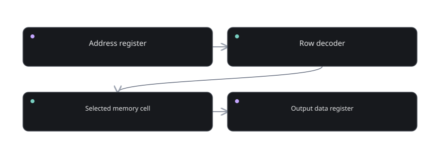

Part 07 of 12
RAM, ROM, and moving data
Understand where bits wait, how they are addressed, and how they move.
The story before the details
A processor that adds a number and immediately forgets the result is not very interesting. We need locations where values can wait, and a systematic way to choose them. Memory adds addressing. A memory address is like an index on a shelf: it specifies which value you want, not what the value is.
Think through an array of sixteen locations, each containing eight bits. Four address lines choose one of sixteen locations; eight data lines carry a byte. With a read operation, the selected byte appears at the output. With a write operation, the selected location is updated. This is the logical contract of RAM, independent of its many physical implementations.
ROM, buses and display interfaces add further structure. ROM can map known input patterns to predefined outputs; it can store constant data or control words. A bus carries multiple related bits between components, subject to direction and enable rules. These ideas prepare us to move real data around a processor.

What you will discover
These six lessons are arranged so each one answers a question created by the previous one. Do not rush to the last lesson. If a concept feels opaque, use the checkpoint before continuing.
- 07.01Why a computer needs storage↗What happens after the ALU finishes?
- 07.02Addressing memory↗How do you choose a storage location?
- 07.03Reading and writing RAM↗How are stored bytes changed?
- 07.04Building small memory↗Can gates build a memory array?
- 07.05ROM and lookup tables↗Can a circuit output stored patterns without writes?
- 07.06The shared bus↗How can several parts exchange one word?
Understand where bits wait, how they are addressed, and how they move. You should be able to explain each concept using only an input, a rule, an output, and any state that must be retained.